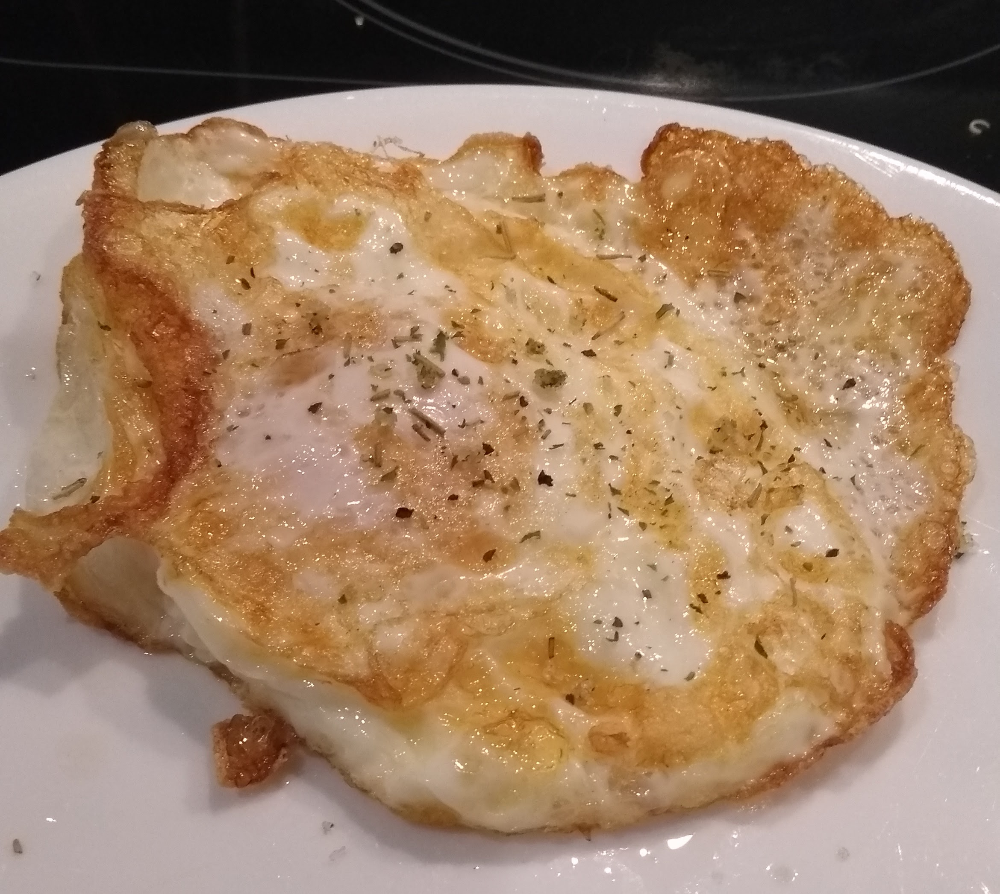

Reasons Why Eggs Are the Healthiest Food on the Planet
One whole egg contains an amazing range of nutrients.In fact, the nutrients in there are enough to turn a single fertilized cell into an entire baby chicken.
Eggs are loaded with vitamins, minerals, high-quality protein, good fats and various other lesser-known nutrients.
One large egg contains:
- Vitamin B12 (cobalamin): 9% of the RDA
- Vitamin B2 (riboflavin): 15% of the RDA
- Vitamin A: 6% of the RDA
- Vitamin B5 (pantothenic acid): 7% of the RDA
- Selenium: 22% of the RDA
A large egg contains 77 calories, with 6 grams of quality protein, 5 grams of fat and trace amounts of carbohydrates.
It’s very important to realize that almost all the nutrients are contained in the yolk, the white contains only protein.
Written by Kris Gunnars, BSc on April 26, 2018
Retrieved from Healthline 16/08/2020
Evidence-Based Health Benefits of Bananas
Bananas are among the world’s most popular fruits.Native to Southeast Asia, they are now grown in many warm parts of the world.
Bananas vary in color, size and shape.
The most common type is the Cavendish, which is a type of dessert banana. Green when unripe, it yellows as it matures.
Bananas contain a fair amount of fiber, as well as several antioxidants. One medium-sized banana (118 grams) also boasts (1, 2Trusted Source, 3Trusted Source):
- Potassium: 9% of the RDI
- Vitamin B6: 33% of the RDI
- Vitamin C: 11% of the RDI
- Magnesium: 8% of the RDI
- Copper: 10% of the RDI
- Manganese: 14% of the RDI
- Net carbs: 24 grams
- Fiber: 3.1 grams
- Protein: 1.3 grams
- Fat: 0.4 grams
The carbs in green, unripe bananas consist mostly of starch and resistant starch, but as the banana ripens, the starch turns into sugar (glucose, fructose and sucrose).
Written by Adda Bjarnadottir, MS, RDN (Ice) on October 18, 2018
Retrieved from Healthline 16/08/2020